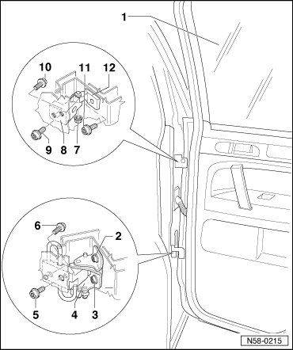

Door Hinge Assembly Overview
Rear Door
Door Hinge Assembly Overview
• The description applies to the right side. The left side is derived accordingly from this.
• Bolts for door hinges must always be replaced after loosening.
• Lubricate the new door hinge if the old one was replaced.

1 Door
• Removing and Installing, refer to --> [ Door ] Rear Door
2 Socket head bolt
• M8•28
• 20 Nm + 1/4 turn (90°) further
• Always replace bolts after loosening them.
3 Socket head bolt
• Only this bolt must be unscrewed to remove the door from the hinge
• M8•28
• 20 Nm + 1/4 turn (90°) further
• Always replace bolts after loosening them.
4 Door hinge with door arrester
• Hinge is divided
• lubricate if the hinge is replaced, refer to --> [ New Door Hinges, Lubricating ] New Door Hinges, Lubricating
5 Socket head bolt
• M8•28
• installed from the inside of the vehicle
• remove the sill panel strip.
• 20 Nm + 1/4 turn (90°) further
• Always replace bolts after loosening them.
6 Socket head bolt
• M8•28
• 20 Nm + 1/4 turn (90°) further
• Always replace bolts after loosening them.
7 Hex nut
• 30 Nm
• Remove this nut to remove door.
8 Door hinge
• Hinge is divided
• lubricate if the hinge is replaced, refer to --> [ New Door Hinges, Lubricating ] New Door Hinges, Lubricating
9 Socket head bolt
• M8•22
• installed from the inside of the vehicle
• Remove the B-pillar trim.
• 20 Nm + 1/4 turn (90°) further
• Always replace bolts after loosening them.
10 Socket head bolt
• M8•28
• 20 Nm + 1/4 turn (90°) further
• Always replace bolts after loosening them.
11 Socket head bolt
• M8•28
• 20 Nm + 1/4 turn (90°) further
• Always replace bolts after loosening them.
12 Door hinge
• Hinge is divided